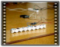
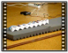
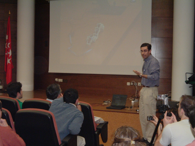
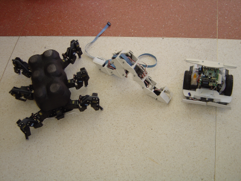

|
Participación
de Cube Revolutions en el concurso nacional de robots HISPABOT
2004. UAH. Alcalá de Henares, Abril 2004.
|
-
Resumen
Cube
Revolutions es un robot ápodo (sin patas) que se desplaza de
manera similar a cómo lo hacen los gusanos de seda.Está
constituido por 8 módulos iguales (Módulos Y1)
conectados con la misma orientación, por lo que se desplaza en
línea recta, hacia adelante o hacia atrás. Los módulos
Y1 se pueden conectar rotados 90 grados uno con respecto al anterior,
pudiéndose construir robots ápodos capaces de
desplazarse por un plano, y no sólo en línea
recta.Tanto la electrónica como la alimentación se
encuentran situados fuera del robot y la generación del
movimiento se hace a través de un PC, conectado por el puerto
serie (RS-232). Este tipo de robots pueden adoptar diferentes formas
lo que los hace especialmente interesantes para desplazarse por zonas
con muchos “recovecos”, donde otros robots no podrían
llegar. La locomoción se realiza aplicando ondas que se
desplazan desde la cola hasta la cabeza. Variando el tipo de onda y
sus parámetros: amplitud y longitud, se consiguen diferentes
estilos de locomoción. Se trata de un robot Abierto, todos sus
planos, la electrónica y el software están disponibles,
concediéndose permisos para su uso, modificación,
distribución y redistribución de las modificaciones.
Vídeos
-
|

|
cube-rev1.mpg
(2.4MB)
|
Explicación
de Cube Revolutions y las diferentes configuraciones e los
módulos Y1
|
|

|
cube-rev2.mpg
(4.8MB)
|
Cube
Revolutions adoptando diferentes formas
|
|

|
cube-rev3.mpg
(9.1MB)
|
Diferentes
formas de desplazarse mediante ondas sinusoidales y semiondas
|
|
|
cube-rev4.mpg
(1.7MB)
|
Cube
Revolutions moviéndose en configuración de rueda
|
Premio
Download
-
-
Licencia
Se condecen permisos
para usar, modificar y/o distribuir esta presentación, siempre
que se mantenga esta nota.
Información adicional
Aplicación
libre QCAD,
para diseño en 2D. Disponible en Debian
(apt-get install qcad)
Aplicación
libre Blender,
para diseño en 3D. Disponible en Debian
(apt-get install blender)
Librerías
gráficas GTK
Cuaderno de bitácora
Mi
intención inicial en HISPABOT
2004 era el enviar un artículo al Seminario,
como ya hice en el 2003, con un
artículo sobre la tarjeta JPS , una entrenadora libre para
FPGA. Sin embargo, en el 2004 no se organizó este seminario.
Como para esas fechas tenía la primera versión de
Cube
Revolutions, quería mostrarlo a la gente,
así que decidí participar en la prueba Libre.
El
concurso de realizó en la Escuela Politécnica de la
Universidad
de Alcalá, el mismo lugar que en las
ediciones pasadas.
Del
Club de Robótica-Mecatrónica (CRM)
de la UAM fuimos 4 grupos:
Zapatitos:
Daniel Álvarez y
Alberto Calvo, con el
robot Queen
Mary en la categoría de Rastreadores. Tenían
pensado inscribir al robot cuadrúpedo Zapatitos en la prueba
libre, sin embargo, por falta de tiempo a última hora no lo
presentaron.
Papón:
Daniel de Castro, Manual García-Herranz, Juan Antonio García
y Ángel José Lera, que presentaron el robot Papón
en la prueba del Laberinto. Se clasificaron para la fase
final.
MundoBot:
Alejandro Alonso,
con el robot
Hexápodo Melanie, en la prueba Libre. Alejandro no
pertenece al CRM pero se inscribió para participar a través
de él. Sólo se puede acceder a Hispabot a través
de uno de sus centros asociados, y uno de ellos es el CRM de la UAM.
Melanie fue el primer clasificado.
IEARobotics:
Y yo (Juan
González) presenté a
Cube
Revolutions en la prueba libre. Quedé
segundo clasificado.
En
la foto de la izquierda están Dani y Alberto
haciendo los últimos retoques a Queen
Mary. En la derecha estamos Alejandro, el grupo Papón,
Ramón y Cristina que se pasaron para ver el
concurso (ellos participaron el año anterior, también
en la prueba libre) y yo. En la parte inferior de la foto se ven los
robots robot
Hexápodo Melanie ,
Cube
Revolutions y Papón.
En
Hipabot pude conocer personalmente a Jose Pichardo, del grupo
UCABOT de la Universidad de Cádiz. Ya nos conocíamos
“electrónicamente” y habíamos hablado por
teléfono, pero nunca nos habíamos visto en persona. Fue
una gran alegría :-) Me presentó al resto de
componentes de UCABOT.
En
la foto de la izquierda están Dani y Alberto,
hablando con Arturo Morgado, el Subdirector de investigación
de la Escuela de Ingeniería de Cádiz, que venía
a concursar con el grupo UCABOT. En la derecha está Alberto
haciendo pruebas con Queen
Mary.
La
prueba libre se celebró el Jueves 29 de Abril, por la tarde.
En la foto de la izquierda estamos Alejandro y yo, una hora
antes de la prueba. Parece que estamos muy tranquilos, pero todo lo
contrario. ¡Estábamos de los nervios! :-) Siempre que se
hacen demostraciones de robots en público hay muchos nervios.
¿Y si de repente los robots dejan de funcionar?. En la foto de
la derecha estoy explicando a
Cube
Revolutions.
|

|

|
Todo
salió bien, tanto Alejandro como yo no tuvimos problemas. La
gente apludió mucho. Parece que nuestros robots gustaron :-).
Melanie ganó el primer premio y
Cube
Revolutions el segundo. ¡¡Mejor no nos
podía haber salido!! :-). En la foto de abajo estamos
Alejandro y yo recogiendo el premio al día siguiente.
En
la izquierda se puede ver a Queen Mary (robot blanco) y en la
foto de la derecha el resto de robots que participaron en
representación del CRM de la UAM: Melanie, Cube
Revolutions y Papón.
|

|

|
Agradecimientos
Noticias
1/Enero/2006:
Añadidos enlaces a
Cube
Revolutions
23/Mayo/2005:
Publicada información en esta web. Con mucho retraso, lo sé
;-)
[Índice
de conferencias]
Juan
González
IEAROBOTICS